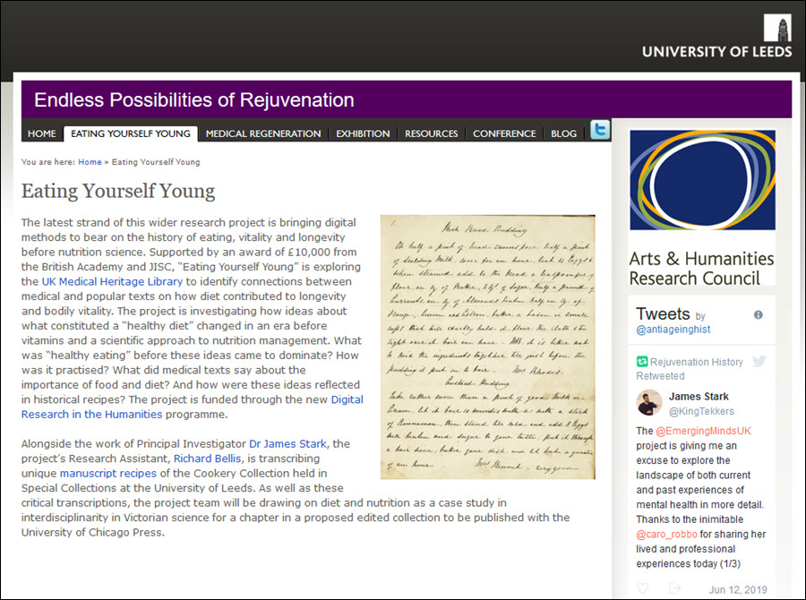

<div class="row">
    <div class="col-xs-12 topSpace">

        <div class="sideMenu">
            <div class="title">About</div>
            <ul>
                <li><a href="/about/">About home</a></li>
                <li><a href="/developmentroadmap/">Development Roadmap</a></li>
                <li><a href="/collections/">Collections</a></li>
                <li><a href="/advisoryboard/">Advisory Board</a></li>
                <li class="selected">
                    <a href="/news/">News</a>
                    <ul>
						<li><a href="/news#2019">2019</a></li>
                        <li><a href="/news#2015">2015&#45;18</a></li>
                        <li><a href="/news#2014">2014</a></li>
                        <li><a href="/news#2013">2013</a></li>
                        <li><a href="/news#2012">2012</a></li>
                        <li><a href="/news#2011">2011</a></li>
                    </ul>
                </li>
                <li><a href="/events/">Events</a></li>
                <li><a href="/presentations/">Presentations</a></li>
				<li><a href="/reports/">Reports</a></li>
                <li><a href="/sitemap/">Sitemap</a></li>
                <li><a href="/accessibility/">Accessibility</a></li>
                <li><a href="/privacy/">Privacy</a></li>
                <li><a href="/cookies/">Cookies</a></li>
                <li><a href="/browser/">Browser Compatibility and Support</a></li>
                <li><a href="/surveys/">Surveys</a></li>
            </ul>
        </div>

        <div class="support">

            <ol class="breadcrumb">
                <li><a href="/about/">About home</a></li>
                <li class="active">News</li>
            </ol>

            <h1>News</h1>


            <h2 id="2019">2019</h2>


            <ul>
				<li>01 July 2019&#58; <a href="/news#2019-07-01">Digital Research in the Humanities Awards Update</a></li>
			  <li>25 June 2019&#58; <a href="/news#2019-06-25">Real people, real lives&#58; Digital archival collections beyond academia</a></li>
				<li>4 January 2019&#58; <a href="/news#2019-01-14">Cardiff University embeds use of the UK Medical Heritage Library collection into its history curriculum</a></li>
            </ul>

            <hr/>
			
			<h3 id="news#2019-07-01">Digital Research in the Humanities Awards Update</h3>
            <h4>27 June 2019</h4>
			
		  <p>The Digital Research in the Humanities award is being delivered by <a href="https://www.thebritishacademy.ac.uk/" target="_self">The British Academy</a> in partnership with Jisc. The programme aims to support researchers engaging with Digital Research in the Humanities, particularly those applying new methods and tools to existing digital resources. You can find details of all the projects taking place on the <a href="https://www.thebritishacademy.ac.uk/projects/digital-humanities-2018" title="Digital Research in the Humanities award 2018" target="_self">British Academy website</a>.</p>
			
			<p>Two of the grant winners are using the <a href="https://ukmhl.historicaltexts.jisc.ac.uk" target="_self">UK Medical Heritage Library</a> Dataset within the Historical Texts platform as part of their research. These projects are&#58;</p>
			
		  <h2>Dr Owen Barden, Liverpool Hope University</h2>
			
		  <h3><a href="https://www.thebraincharity.org.uk/antonia" target="_self">Inside the history of learning difficulties</a></h3>
			
		  <p>This project investigates historical representations of what are now often called &quot;learning difficulties&quot;. Disabled people in general, and people labelled with learning difficulties in particular, have too often been excluded from their own histories. This project aims to address such exclusion, analysing a text in the UK Medical Heritage Library, using a disability studies perspective. In doing so, we use a novel methodology combining digital archival research with participatory workshops. These workshops bring together academics, people labelled with learning difficulties and their advocates. They generate powerful new knowledge about both historical representations of learning difficulties and the lived experience of learning difficulties today. This new way of doing history suggests ways of reaching marginalised or unanticipated audiences for archive material, whilst surfacing challenges relating to the accessibility of such material.</p>
			
		  <p>You can also read a blog post describing one of the projects workshops on the the <a href="https://digitisation.jiscinvolve.org/wp/2019/05/24/real-people-real-lives-digital-archival-collections-beyond-academia/" target="_self">Content and Digitisation blog</a>.</p>
			
			<a href="https://www.thebraincharity.org.uk/antonia" target="_self"></a>
			
		  <h2>Dr James Stark, University of Leeds</h2>
			
		  <h3><a href="https://arts.leeds.ac.uk/medregen/eatingyourselfyoung/" target="_self">Eating yourself young&#58; diet, recipe, and vitality before nutrition science</a></h3>
			
		  <p>The advent of modern nutrition science in the early 20th century, with its focus on vitamins, minerals and complex perceptions of the traditional food components of carbohydrates, fats and proteins, has fundamentally altered our understanding of food. But what was "healthy eating" before these ideas came to dominate&#63; How was it practised&#63; What did medical texts say about the importance of food and diet&#63; And how were these ideas reflected in historical recipes&#63; Using records of the recently established UK Medical Heritage Library &#45; a large digital corpus in the history of science, technology and medicine &#45; the project will use textual analysis tools to explore in new ways the relationship between nutrition, diet, health and cookery in the 19th century. It will generate new insights at the intersection of food history, history of science and medicine, and digital humanities to lay the foundations for future research at the between these distinct fields</p>
			
			<a href="https://arts.leeds.ac.uk/medregen/eatingyourselfyoung/" target="_self"></a>

			<hr/>
			
			<h3 id="news#2019-06-25">Real people, real lives&#58; Digital archival collections beyond academia</h3>
		  <h4>25 June 2019</h4>
			
			<p><a href="https://www.jisc.ac.uk/staff/stephen-brooks" target="_self">Stephen Brooks</a> reports on the work of Dr Owen Barden, a recipient of a Jisc&#45;sponsored <a href="https://www.thebritishacademy.ac.uk/ba-jisc-digital-research-in-the-humanities?utm_medium=social&utm_source=twitter&utm_campaign=digital-humanities&utm_content=funding&utm_term=1" target="_self">British Academy award</a>, using the UK Medical Heritage Library to connect those in the disabled community with their own history. The <a href="https://digitisation.jiscinvolve.org/wp/2019/05/24/real-people-real-lives-digital-archival-collections-beyond-academia/" target="_self">Content and Digitisation blog post</a> gives some background to the project and reports from one of the project&#39;s worskshops</p>
			
			
			
		  <hr/>

            <h3 id="news#2019-01-14">Cardiff University embeds use of the UK Medical Heritage Library collection into its history curriculum</h3>
            <h4>4 January 2019</h4>
            
            <p>Cardiff University conducted a study in partnership with Jisc to determine if introducing second year undergraduate students to using primary sources as part of their studies would help improve their research skills and if they would have the capacity to engage with the resources presented to them.</p>
            
			<p>The use of the UK Medical Heritage Library was embedded into the curriculum rather than being taught as a separate module and all students were taught how to use the archive with no expectation of prior knowledge. </p>
                     
            <p>Students learned to&#58;</p>

            <ul>
				<li>Construct searches and avoid being overwhelmed by large amounts of results</li>
				<li>Link the content to other resources</li>
				<li>Ask sound questions of primary sources</li>
				<li>Manage their own research and become independent learners</li>
            </ul>

            <p>The level of student engagement with the material and discussion seminars was high although lessons were learned on the structure of some activities.</p>
			
			<p>Read the report on full via the Jisc Archives&#58; <a href="http://repository.jisc.ac.uk/7129/"> Turning students into scholars PDF.</a> </p>

            <p>Visit the UK Medical Heritage Labs site to see data visualisations and other novel methods of exploring the collection: <a href="https://ukmhl.historicaltexts.jisc.ac.uk">https://ukmhl.historicaltexts.jisc.ac.uk.</a></p>
           

            <hr />

           
            <h2 id="2015">2015&#45;18</h2>
            <ul>
				<li>13 June 2018&#58; <a href="/news#2018-06-13">UK Medical Heritage Library cross-searchable with EEBO, ECCO and BL 19th Century collections</a></li>
               <li>16 June 2017&#58; <a href="/news#2017-06-09">Historical Texts webinar &#45; Service Overview and New Features June 2017</a></li>
                <li>28 Oct 2016&#58; <a href="/news#2016-10-28">New UK Medical Heritage Library portal in Historical Texts</a></li>
                <li>24 Oct 2016&#58; <a href="/news#2016-10-24">Invitation to the UK Medical Heritage Library live labs event, 26 October 2016</a></li>
                <li>07 Oct 2016&#58; <a href="/news#2016-10-07">Invitation to the UK Medical Heritage Library symposium, 27 October 2016</a></li>
                <li>21 June 2016&#58; <a href="/news#2016-06-21">New features and data &#45; EEBO periodicals and ECCO and BL multi&#45;volume enhancements, EEBO TCP, ECCO TCP, EEBO images update</a></li>
                <li>12 May 2016&#58; <a href="/news#2016-05-12">New features area</a></li>
                <li>06 Apr 2016&#58; <a href="/news#2016-04-06">Usage statistics portal available</a></li>
                <li>18 Dec 2015&#58; <a href="/news#2015-12-18">New features &#45; matches within text, My Tags, variants in viewer and additional preference settings</a></li>
                <li>27 Oct 2015&#58; <a href="/news#2015-10-27">New features &#45; histogram, additional navigation options and preference settings</a></li>
                <li>28 Jul 2015&#58; <a href="/news#2015-07-28">New helpdesk email address</a></li>
                <li>07 Apr 2015&#58; <a href="/news#2015-04-07">Mobile friendly interface &#45; stage one</a></li>
            </ul>

            <p>For older news items please select a year from the menu on the left.</p>

            <hr />

            <h3 id="news#2018-06-13">UK Medical Heritage Library cross-searchable with EEBO, ECCO and BL 19th Century collections</h3>
            <h4>13 June 2018</h4>
            
            <p>We&#39;re pleased to announce that we’ve integrated the UK Medical Heritage Library into the main Historical Texts service now. This enables you to cross-search all four of our collections (Early English Books Online, Eighteenth Century Collections Online, UK Medical Heritage Library and 65,000 texts from the BL 19th Century collection) in a single platform. It also increases the number of publications in Historical Texts to over 460,000.</p>
            
			<p>Previously the UK Medical Heritage Library was only available in Historical Texts via a <a href="https://ukmhl.historicaltexts.jisc.ac.uk/"> separate open access site</a>. The visualisations for the UK Medical Heritage Library will remain on our separate dedicated site, and if you only want to search the UK Medical Heritage Library then you can continue to just use that site. </p>
            
			<p>As the UK Medical Heritage Library is our first open access collection we’ve needed to make changes to enable us to deliver both open access and subscription-only collections alongside each other in the service. This means subscribers to Historical Texts can search and view all collections and anyone can now search all of our collections and view the full text and images for open access collections. </p>

            <p>There are three key platform changes&#58;</p>
            
			<p>Firstly, you no longer need to login to search Historical Texts. Everyone can search all four collections and view images and full text for the UK Medical Heritage Library collection. You’ll only be prompted to login when you open the images and full text from a publication in a subscription-only collection &#40;EEBO, ECCO, BL&#41; now.</p>
         
			<p>Secondly, you’ll notice there is a padlock symbol next to search results that are from subscription-only collections &#40;EEBO, ECCO, BL&#41;. This is to help you quickly identify whether you have access to the full text for the record or not.</p>
         
			<p>Thirdly, we’ve added a sign in button to the toolbar at the top of the platform. This will enable subscribers to login via Shibboleth / OpenAthens at any point, for example, to access personalisation features such as saved searches and saved items even if you are just exploring an open access collection</p>
          
            <p>There are also a number of other changes included in this release to improve the service&#58;</p>

            <ul>
				<li><strong>Histogram</strong>. It's been changed from a line graph to a bar chart format for clearer results, e.g. to highlight where there are no results for a specific year. A scissors  feature to update the results for the selected date range has been moved over from date tab histogram).</li>
				<li><strong>Variant spellings</strong>. You may notice changes to the variants returned for some of your searches due to changes in how they are returned by the application. There will be further enhancements to the variant spellings over the next year.</li>
				<li><strong>Author and printer/publisher browse</strong>. Results will be returned in the main results tab now rather than in-line in the author or printer/publisher tab. </li>
				<li><strong>PDF and JPEG downloads may open differently e.g. in a new window</strong>. This will depend on your local machine settings.</li>
				<li><strong>Overlay</strong>. A grey overlay will appear when the system is running a complex request for more than around two seconds (e.g. a wide search) and prevents any further user interaction until the process has completed.</li>
				<li><strong>Date tab removed from results tabs</strong>. The sort options on main results tab provide date sorting options.</li>
				<li><strong>Print PDF icon removed from toolbar</strong>. You can print a PDF, or any other format, by using the download option on the toolbar to download it to your local machine first.</li>
            </ul>

            <p>Our <a href="https://youtu.be/DGh-zJEejHA"> short video</a> demonstrates the main changes in this release. </p>

            <p>Depending on the configuration on your local machine, you may find that to see these changes you need to do a hard refresh in your browser &#40;Windows: ctrl + F5, Mac: Apple + R or command + R&#41;, or manually clear your cache and cookies, to ensure you are viewing the latest version of the platform.</p>

            <p>In future, we’ll be adding further open access collections to Historical Texts, as well as moving our BL 19th Century collection to the open access area of the platform. Keep an eye on our <a href="http://historicaltexts.jisc.ac.uk/developmentroadmap/">Development Roadmap</a> to see what we're working on.</p>

            <p>We hope you enjoy exploring the UK Medical Heritage Library alongside our other collections and welcome any feedback on these changes, so please do contact our helpdesk at <a href="mailto:historicaltexts@jisc.ac.uk">historicaltexts@jisc.ac.uk</a> to let us know your thoughts on it.</p>

            <hr />
            
             <h3 id="news#2017-06-16">Historical Texts webinar &#45; Service Overview and New Features June 2017</h3>
            <h4>16 June 2017</h4>
            <p>We&#39;re pleased to announce a webinar, to provide an overview of the current state of the service, and to demonstrate new features. Interested parties can sign up by registering at the following link&#58;</p>
            <a href="https://www.jisc.ac.uk/events/historical-texts-service-overview-and-new-features-28-jun-2017">https://www.jisc.ac.uk/events/historical-texts-service-overview-and-new-features-28-jun-2017</a>

            <p>This webinar will explore our Historical Texts service. It will highlight the evolution of the service, both in terms of content and functionality.</p>

            <p>Historical Texts brings together four significant collections for the first time&#58;</p>

            <ul>
                <li>Early English Books Online &#40;EEBO&#41;</li>
                <li>Eighteenth Century Collections Online &#40;ECCO&#41;</li>
                <li>British Library 19th Century collection</li>
                <li>UK Medical Heritage Library &#40;UKMHL&#41; collection</li>
            </ul>

            <p>As Historical Texts continues to evolve, this webinar will provide you with an opportunity to learn about the new and exciting features and content the service now offers and hear about our plans to develop the service further.</p>

            <p>One of the most exciting forthcoming developments is an enhancement to our variant spelling search feature, which will be powered by data from the Oxford English Dictionary. You&#39;ll also hear about the new ways we are engaging with the community through Live Lab events and the Historical Texts Labs area, as well as the expanded set of support materials now available.</p>

            <p>Whether you&#39;re an experienced user of Historical Texts looking to see what&#39;s coming next, or you&#39;re thinking about whether the service will help support your research or your institution, this webinar will benefit you.</p>

            <p><strong>Speakers&#58;</strong></p>
            <ul>
                <li>Jonathan Cates, digital content product manager, will provide some background on Historical Texts, giving an overview of the different collections.</li>
                <li>Susan Anderton, service manager &#40;Historical Texts and Journal Archives&#41; will showcase some new and forthcoming features, including some striking data visualisation tools, and explain more about the Live Lab events, the Historical Texts Labs area and the expanded support materials.</li>
            </ul>
            <p><strong>Who should attend&#58;</strong></p>

            <ul>
                <li>Managers and senior managers within higher education libraries with responsibility for content acquisition, collection management and development, archives and special collections</li>
                <li>Academics and researchers with an interest in primary source material in the humanities</li>
            </ul>


            <p>The webinar will take place on Wednesday 28 June at 11am. If you have any queries, please contact the Historical Texts helpesk at <a href="mailto:historicaltexts@jisc.ac.uk">historicaltexts@jisc.ac.uk</a></p>
            <hr />

            <h3 id="2016-10-28">New UK Medical Heritage Library portal in Historical Texts</h3>
            <h4>28 October 2016</h4>

            <p>We&#39;re pleased to announce that on 27 October 2016 a new <a href="https://ukmhl.historicaltexts.jisc.ac.uk">UK Medical Heritage Library portal</a> was released as part of the Historical Texts service. </p>

            <p>The UK Medical Heritage library collection has been produced through a <a href="https://www.jisc.ac.uk/rd/projects/uk-medical-heritage-library">three year project funded by Jisc and Wellcome Library to digitise over 15 million pages of 19th century published works</a>. It&#39;s a partnership between 10 institutions, with the Wellcome Library contributing its whole 19th century collection. Encompassing over 65,000 publications, the subject areas covered are broad and include topics such as consumer health, sport and fitness, food and nutrition as well as medicine and medical practices, providing a valuable resource for study in the medical humanities and beyond.</p>

            <p>The collection is open access and freely available to all via <a href="https://ukmhl.historicaltexts.jisc.ac.uk">Historical Texts</a>, the <a href="http://wellcomelibrary.org/collections/digital-collections/uk-medical-heritage-library/">Wellcome Library</a> and the <a href="https://archive.org/details/ukmhl">Internet Archive</a>.</p>

            
            <p>Montage images (clockwise starting top left): brain (<a href="https://data.ukmhl.historicaltexts.jisc.ac.uk/view?pubId=ukmhl-b21273832&index=ukmhl&pageId=ukmhl-b21273832-117">Anatomy of the brain and spinal chord</a>, 1887), ear diseases (<a href="https://data.ukmhl.historicaltexts.jisc.ac.uk/view?pubId=ukmhl-b21523319_0002&index=ukmhl&pageId=ukmhl-b21523319_0002-109">An American textbook of diseases of the eye, ear, nose and throat (Volume 2)</a>, 1899), woman exercising (<a href="https://data.ukmhl.historicaltexts.jisc.ac.uk/view?pubId=ukmhl-b21934332&index=ukmhl&pageId=ukmhl-b21934332-31">Mechanical exercise, a means of cure</a>, 1883), puddings (<a href="https://data.ukmhl.historicaltexts.jisc.ac.uk/view?pubId=ukmhl-b2152807x&index=ukmhl&pageId=ukmhl-b2152807x-492">Beeton's every-day cookery and housekeeping book</a>, 1888?), menu card illustration (<a href="https://data.ukmhl.historicaltexts.jisc.ac.uk/view?pubId=ukmhl-b21273832&index=ukmhl&pageId=ukmhl-b21273832-117">Anatomy of the brain and spinal chord</a>, 1887), Sand-bath (<a href="https://data.ukmhl.historicaltexts.jisc.ac.uk/view?pubId=ukmhl-b24871734_0001&index=ukmhl&pageId=ukmhl-b24871734_0001-425">A history of Hindu chemistry</a>, 1907), plants (<a href="https://data.ukmhl.historicaltexts.jisc.ac.uk/view?pubId=ukmhl-b21913109_0001&index=ukmhl&pageId=ukmhl-b21913109_0001-153">Illustrations of Indian botany (Volume 1)</a>, 1840), fold out body parts (<a href="https://ukmhl.historicaltexts.jisc.ac.uk/ukmhl-b28078767">Der Mensch, oder, Wie es in unserem Korper aussieht, und wie seine Organe arbeiten</a>, 1897?).</p>

            <h3>Visualisations</h3>

            <p>Uniquely, the UK Medical Heritage Library portal in Historical Texts also provides a range of visualisations to help researchers, students and teachers explore the data in various ways.</p>

            <ul>
                <li><strong>Image wall</strong>: displays all of the images extracted from publications in your search results</li>
                <li><strong>Hospital map</strong>: enables you to identify and explore content related to specific hospitals</li>
                <li><strong>Timeline</strong>: displays events that occured in the time period of your search results</li>
                <li><strong>Ngram</strong>: compare word frequencies</li>
                <li><strong>Dendrograms</strong>: for body parts and medical conditions</li>
                <li><strong>Sunburst diagrams</strong>: for body parts and medical conditions</li>
            </ul>

            

            <p>The visualisations have been created through the Visualising Medical History project by partners <a href="http://www.gooii.com/">Gooii</a>, <a href="https://k-int.com/">Knowledge Integration</a> and <a href="http://www.sero.co.uk/">Sero Consulting</a>, in collaboration with Jisc, <a href="https://wellcomelibrary.org/">Wellcome Library</a>, and an Academic Advisory Group.</p>

            <p>This is the first open access collection provided by the Historical Texts service and it&#39;s currently in a separate new Labs area. Historical Texts Labs is an area we&#39;ve developed to enable researchers, students and teachers to test out and feedback on new features before they go into the live service.</p>

            <p>The UK Medical Heritage Library collection will also be added to the main Historical Texts service over the next few months so, for institutions that subscribe to Historical Texts, it will be cross-searchable alongside the existing Early English Books Online (EEBO), Eighteenth Century Collections Online (ECCO) and 65,000 texts from the British Library 19th Century collections. There will continue to be an open access portal in Historical Texts for the UK Medical Heritage Library collection though, so this collection will remain freely available to all.</p>

            <p>We&#39;re keen to hear your feedback on the new portal and visualisations so please do contact us via email at <a href="mailto:historicaltexts@jisc.ac.uk">historicaltexts@jisc.ac.uk</a>, <a href="http://twitter.com/historicaltexts">Twitter</a> or <a href="https://www.facebook.com/jischistoricaltexts/">Facebook</a> to let us know your thoughts. We welcome ideas for future developments to enhance this resource for research, teaching and learning. </p>


            <h3 id="2016-10-24">Invitation to the UK Medical Heritage Library Live Labs event, 26 October 2016</h3>
            <h4>24 October 2016</h4>

            <p>We would like to invite you to the UK Medical Heritage Library Live Labs event</p>

            <p>Date&#58; Wednesday 26 October 2016
                <br />Time&#58; 11&#58;00&#45;18&#58;00
                <br />Venue&#58; Wellcome Collection, 183 Euston Road, London, NW1 2BE
                <br />Cost&#58; Free but booking is required
                <br />Who should attend&#58; the event is aimed at students, academics and researchers from any discipline to explore and develop ideas around the use of the rich text and image assets which the collection provides.</p>

            <p>The UK Medical Heritage Library is making 68,000 19th century texts relating to the history of medicine freely available to all.</p>

            <p>Jisc is working with the Wellcome Library on this three&#45;year project along with nine other UK universities who are all contributing content to this collection.
                <br />The collection is openly available via the <a href="http://wellcomelibrary.org/collections/digital-collections/uk-medical-heritage-library/">Wellcome Library</a> and the <a href="https://archive.org/details/ukmhl">Internet Archive</a>, and from November 2016 will be available in the new Labs area of the <a href="http://historicaltexts.jisc.ac.uk">Historical Texts</a> platform, which already contains some 350,000 texts from the 15th to the 19th centuries.</p>

            <p>This event is aimed at subject specialists with an eye for the unusual, so don&#39;t worry if you're not an expert digital humanist. We are looking for users who are passionate about exploring patterns, how they relate to data elsewhere and about extracting and creating information that reveals new stories about the content.
                <br /> This work may lead to the development of new tools for the Historical Texts platform, and is envisaged as the first of a series of lab events.
            </p>

            <p>The event will hosted by Melissa Terras &#40;UCL&#41; a leading digital humanist and will be led by Owen Stephens who has a wealth of experience in working with large library datasets.</p>

            <p>You can book your place via the Jisc website&#58; <a href="https://www.jisc.ac.uk/events/uk-medical-heritage-library-live-lab-26-oct-2016">https://www.jisc.ac.uk/events/uk-medical-heritage-library-live-lab-26-oct-2016</a></p>

            <p>For any questions about the event please contact Peter Findlay, Digital Portfolio Manager at <a href="mailto:peter.findlay@jisc.ac.uk">peter.findlay@jisc.ac.uk.</a></p>


            <h3 id="2016-10-07">Invitation to the UK Medical Heritage Library symposium, 27 October 2016</h3>
            <h4>07 October 2016</h4>

            <p>We would like to invite you to the UK Medical Heritage Library symposium.</p>

            <p>Date&#58; Thursday 27 October 2016
                <br />Time&#58; 10&#58;00&#45;16&#58;00
                <br />Venue&#58; Wellcome Trust, Gibbs Building, 215 Euston Road, London, NW1 2BE
                <br />Cost&#58; Free but booking is required
                <br />Who should attend&#58; the event is aimed at academics, researchers, librarians and archivists</p>

            <p>The UK Medical Heritage Library is making 68,000 19th century texts relating to the history of medicine freely available to all.</p>

            <p>Jisc is working with the Wellcome Library on this three&#45;year project along with nine other UK universities who are all contributing content to this collection.
                <br />The collection is openly available via the <a href="http://wellcomelibrary.org/collections/digital-collections/uk-medical-heritage-library/">Wellcome Library</a> and the <a href="https://archive.org/details/ukmhl">Internet Archive</a>, and from November 2016 will be available in the new Labs area of the <a href="http://historicaltexts.jisc.ac.uk">Historical Texts</a> platform, which already contains some 350,000 texts from the 15th to the 19th centuries.</p>

            <p>The purpose of this &lsquo;symposium&rsquo; event is to launch this valuable and rich resource for teaching, learning and research. It will provide an opportunity for discussion around the integration of digital and print resources. We hope to explore issues arising from such integration within the wider context of digital humanities and with a particular focus on the medical humanities.</p>

            <p>You can book your place via the Jisc website&#58; <a href="https://www.jisc.ac.uk/events/uk-medical-heritage-library-symposium-27-oct-2016">https://www.jisc.ac.uk/events/uk-medical-heritage-library-symposium-27-oct-2016</a></p>

            <p>For any questions about the event please contact Peter Findlay, Digital Portfolio Manager at <a href="mailto:peter.findlay@jisc.ac.uk">peter.findlay@jisc.ac.uk.</a></p>


            <h3 id="2016-06-21">New features and data &#45; EEBO periodicals and ECCO and BL multi&#45;volume enhancements, EEBO TCP, ECCO TCP, EEBO images update</h3>
            <h4>21 June 2016</h4>

            <p>We&#39;re pleased to announce that we&#39;ve released a major update to Historical Texts today. This release includes additional data as well as a range of new features that have been requested by our user community.</p>
            <p><strong>EEBO enhancements</strong></p>
            <ul>
                <li>New EEBO periodicals search </li>
                <li>EEBO periodicals display improved</li>
                <li>Additional XML, HTML, epub and plain text download options for EEBO texts with manually keyed text transcriptions &#40;EEBO TCP&#41;</li>
                <li>Additional EEBO images</li>
                <li>Additional 20,000 EEBO TCP full text transcriptions</li>
                <li>Search on EEBO TCP ID </li>
            </ul>

            <p><strong>ECCO enhancements</strong></p>
            <ul>
                <li>2000 ECCO manually keyed text transcriptions &#40;ECCO TCP&#41; available for the first time </li>
                <li>Additional XML, HTML, epub and plain text download options for ECCO texts with manually keyed text transcriptions &#40;ECCO TCP&#41;</li>
                <li>Links between volumes of multi-volume works</li>
                <li>Search on ESTC number with or without the leading zero</li>
            </ul>

            <p><strong>BL enhancements</strong></p>
            <ul>
                <li>Links between volumes of multi&#45;volume works</li>
            </ul>

            <p> For a full description of each point listed above please see our <a href="http://historicaltexts.jisc.ac.uk/files/HT-releasenotes-21June2016.pdf" target="blank" title="Release notes (21 June 2016)">Release notes &#40;21 June 2016&#41;</a></p>

            <p>Just a reminder, if you can access <a href="http://historicaltexts.jisc.ac.uk" title="Historical Texts">Historical Texts</a> , but can&#39;t see the new features, we suggest you clear your browser cache and cookies to ensure you are viewing the latest version of the application.
                </p>

                    <p> We welcome feedback on the new features so please do contact our helpdesk at
                        <a href="mailto:historicaltexts@jisc.ac.uk">historicaltexts@jisc.ac.uk</a> to let us know your thoughts on them or for any assistance using them.</p>

                    <p>The screenshot below shows the new download options available for EEBO TCP and ECCO TCP publications.</p>
                    

                    <h3 id="2016-05-12">New features area</h3>
                    <h4>12 May 2016</h4>

                    <p>A features area is now available, to highlight some of the wide variety of content you can find in Historical Texts&#58;</p>

                    <p><a href="http://historicaltexts.jisc.ac.uk/features" title="http://historicaltexts.jisc.ac.uk/features">http://historicaltexts.jisc.ac.uk/features</a> </p>

                    <p> Initially we have features on Shakespeare, maps, witchcraft, music, London and British Library Covers. More features will be added over the coming months and we welcome suggestions for new features, as well as content to add to existing ones.
                        </p>

                            <p> So if you or your colleagues have ideas for features, or would like to write a feature yourself for us, please do contact our helpdesk at <a href="mailto:historicaltexts@jisc.ac.uk">historicaltexts@jisc.ac.uk</a> to let us know.</p>

                            

                            <h3 id="2016-04-06">Usage statistics portal available</h3>
                            <h4>06 April 2016</h4>

                            <p>We&#39;re pleased to announce that a new <a href="http://portal.historicaltexts.jisc.ac.uk/" title="http://portal.historicaltexts.jisc.ac.uk/"> usage statistics portal</a> is available for Historical Texts.</p>
                            <p>The portal provides full text access statistics for subscribing institutions from the launch of the new platform on 23 June 2014. The usage statistics report we provide follows the rules of <a href="http://www.projectcounter.org/code_practice.html" title="COUNTER">COUNTER</a>. It's not currently COUNTER compliant&#44; but this is something that we will be working towards in future.</p>
                            <p>The portal is available to librarians at subscribing institutions and more than one librarian at an institution can have a user account for it. Please contact our helpdesk at <a href="mailto:historicaltexts@jisc.ac.uk">historicaltexts@jisc.ac.uk</a> to request an account.</p>
                            <p>Additional reports will also be available in future and we&#39;re keen to gather feedback on the data that you would find useful. Please do contact our helpdesk at <a href="mailto:historicaltexts@jisc.ac.uk">historicaltexts@jisc.ac.uk</a> to let us know your thoughts.</p>
                            <p> We would also like to thank the librarians who kindly provided feedback during the testing phase of the portal. </p>

                            
                            <h3 id="2015-12-18">New features - matches within text, My Tags, variants in viewer and additional preference settings</h3>
                            <h4>18 December 2015</h4>

                            <p>We&#39;ve released several new features in Historical Texts this month:</p>

                            <ul>
                                <li><strong>Matches within text</strong>: a link beneath each record on the results screen displays your search term in context on matching pages within the publication </li>
                                <li><strong>Variants and illustration search within a publication</strong>: new checkboxes on the &#34;pages&#34; tab of the &#34;search&#34; panel in the viewer for these options</li>
                                <li><strong>My Tags</strong>: ability to create and save tags on individual pages within a publication to return to in future sessions (NB: this requires logging in via the UK Federation (Shibboleth and OpenAthens). Tags can be created by selecting the Tags button in the right hand &#34;details&#34; panel in the viewer </li>
                                <li><strong>Default collection search preferences added to My Settings</strong>: Ability to choose to only search EEBO, ECCO or BL by default by selecting options in the settings cog on the navigation bar (NB: this requires logging in via the UK Federation (Shibboleth and OpenAthens)</li>
                            </ul>

                            <p>As usual, many of these features were a result of feedback we&#39;ve received from the community. We hope you find them useful, so please do contact our helpdesk at <a href="mailto:historicaltexts@jisc.ac.uk">historicaltexts@jisc.ac.uk</a> to let us know your thoughts on them or for any assistance. </p>

                            <p>If you can't see any of these new features when you login please <a href="http://historicaltexts.jisc.ac.uk/faq/">clear your browser cache and cookies</a> then restart your browser, to ensure you're seeing the latest version of the application.</p>

                            <p>See what we&#39;re working on at the moment, as well as the enhancements we&#39;ve scheduled, on our <a href="http://historicaltexts.jisc.ac.uk/developmentroadmap/">Development Roadmap</a> page.</p>

                            <p>An example of the matches within a particular text for a search for &#34;orange pudding&#34;:</p>
                            
                            <p>An example of a text with three tags created in it:</p>
                            


                            <h3 id="2015-10-27">New features - histogram, additional navigation options and preference settings</h3>
                            <h4>27 October 2015</h4>

                            <p>We&#39;ve released a range of new features in Historical Texts for the start of the new academic term:</p>
                            <a class="image">
			   
			   </a>
                            <ul>
                                <li><strong>Histogram</strong> to visually display the publication date range for your search results</li>
                                <li><strong>Navigation toolbar in full screen view</strong></li>
                                <li><strong>Navigation toolbar in the full text</strong> (in the right hand &lsquo;details&rsquo; panel in the viewer)</li>
                                <li><strong>Settings cog on the top navigation bar to save your preferences.</strong> Options available for results page thumbnails (on&#47;off) and advanced search options (open&#47;closed). NB: this requires logging in via the UK Federation (Shibboleth and OpenAthens)</li>
                                <li><strong>Letter &lsquo;T&rsquo; in grey circle in viewer</strong> &lsquo;details&rsquo; panel when closed to indicate a publication has full text</li>
                                <li><strong>Improvements to mobile friendly display</strong> for smart phones</li>
                            </ul>

                            <a class="image">
			   
			   </a>

                            <p>Many of these features were a result of feedback we&#39;ve received from the community.</p>

                            <p>We hope you find them useful, so please do contact our helpdesk at <a href="mailto:historicaltexts@jisc.ac.uk">historicaltexts@jisc.ac.uk</a> to let us know your thoughts on them.</p>


                            <h3 id="2015-07-28">New helpdesk email address</h3>
                            <h4>28 July 2015</h4>

                            <p>We now have a new helpdesk email address for Historical Texts: <a href="mailto:historicaltexts@jisc.ac.uk">historicaltexts@jisc.ac.uk</a>.</p>

                            <p>Please use this email address for all future enquiries to the Historical Texts helpdesk. </p>

                            <p>As Mimas became part of the Digital Resources Directorate at Jisc in August 2014, we have now moved from a Mimas to a Jisc email address format.</p>

                            <p>Emails to the old helpdesk email address (historicaltexts@mimas.ac.uk) will continue to be forwarded to us for a transition period.</p>

                            <p>If you have any questions about this change or require any other assistance please do contact us at <a href="mailto:historicaltexts@jisc.ac.uk">historicaltexts@jisc.ac.uk</a>.</p>

                            <h3 id="2015-04-07">Mobile friendly interface - stage one</h3>
                            <h4>07 April 2015</h4>

                            <p>We're keen to ensure researchers can use Historical Texts from whatever device they choose, be it a desktop, laptop, tablet or mobile phone. Rather than creating a separate app for mobile devices we're making the interface responsive, so it will resize according to the device you are accessing it from.</p>
                            <p>There are two stages to this process: firstly to make the search and results screen mobile friendly, then secondly to make the viewer mobile friendly.</p>
                            <p>We're pleased to announce that the first stage is complete and we released the mobile friendly search and results screen in March 2015. For a quick demonstration of how this looks on a tablet and a mobile phone please see our short <a href="https://www.youtube.com/watch?v=-2JA4OOlJvA">tablet demo</a> and <a href="https://www.youtube.com/watch?v=ON43UuJ7gxU">phone demo</a> videos.</p>
                            <p>The second stage to make the viewer mobile friendly will be completed later in 2015.</p>

                            <p>We do hope you find this enhancement useful and we welcome feedback on it, so please contact us at <a href="mailto:historicaltexts@mimas.ac.uk">historicaltexts@mimas.ac.uk</a> to let us know your thoughts on it, or for any other assistance.</p>

                            <hr />

                            <h2 id="2014">2014</h2>

                            <ul>
                                <li>12 Dec 2014: <a href="/news#2014-12-12">New features &#45; saved searches and publications</a></li>
                                <li>29 Sep 2014&#58; <a href="/news#2014-09-29">Historical Texts - new features now available</a></li>
                                <li>10 Jul 2014&#58; <a href="/news#2014-07-10">Historical Texts has replaced Jisc Historic Books</a></li>
                                <li>02 Jun 2014&#58; <a href="/news#2014-06-02">Historical Texts is replacing Jisc Historic Books</a></li>
                                <li>23 May 2014&#58; <a href="/news#2014-05-23">Beta version of Historical Texts released</a></li>
                                <li>08 Apr 2014&#58; <a href="/news#2014-04-08">Historical Texts demo at UKSG - the new platform for Jisc Historic Books</a></li>
                                <li>03 Apr 2014&#58; <a href="/news#2014-04-03">New platform release schedule and name change</a></li>
                                <li>11 Feb 2014&#58; <a href="/news#2014-02-11">Annual User Satisfaction Survey</a></li>
                            </ul>

                            <h3 id="2014-12-12">New features &#45; saved searches and publications</h3>
                            <h4>12 December 2014</h4>

                            <p>We're pleased to announce that personalisation options are now available in Historical Texts, so you can save searches and publications for future sessions.</p>
                            <ul>
                                <li><strong>Save searches&#58;</strong> A green &quot;save search&quot; button enables you to save your current search. Your saved search can be viewed and run from the &quot;saved searches&quot; option under &quot;My Texts&quot; on the toolbar at the top of the screen.</li>
                                <li><strong>Save publications&#58;</strong> You can save publications to a list for future reference by selecting the checkbox next to one or more results from your results list. The publications will be added to the &quot;My Saved Items&quot; tab and from there you can add them to a new list or an existing list. You can also access your saved items from &quot;My Texts&quot; on the toolbar at the top of the screen.</li>
                            </ul>

                            <p>You can create up to 99 searches and lists as well as save up to 99 publications in each list.</p>
                            <p>Personalisation options are only available when logging in via an institutional account &#40;UK Federation Shibboleth&#47;OpenAthens&#41;. If you access Historical Texts directly &#40;IP authentication&#41; then you will be prompted to login with an institutional account when you click on &quot;save search&quot;, &quot;My Saved Items&quot; or an option under &quot;My Texts&quot;. </p>

                            <p>
                                <a class="image">
			   
								</a></p>

                                <p>This release also includes the following enhancements to the viewer along with some fixes for minor bugs&#58;</p>
                                <ul>
                                    <li><strong>Viewer fuzzy search&#58;</strong> there is now a fuzzy search checkbox in the viewer &#40;&quot;pages&quot; tab on the left hand search panel&#41;.</li>
                                    <li><strong>Viewer page results ordering&#58;</strong> you can order page results in the viewer by relevance, page ascending and page descending (&quot;pages&quot; tab on the left hand search panel).</li>
                                </ul>
                                <p>We do hope you find the new features useful and we welcome feedback on them, so please contact us at <a href="mailto:historicaltexts@mimas.ac.uk">historicaltexts@mimas.ac.uk</a> to let us know your thoughts on them, or for any other assistance.</p>


                                <h3 id="2014-09-29">Historical Texts &#45; new features now available</h3>
                                <h4>29 September 2014</h4>

                                <p>We have now released a wave of new features to the Historical Texts service &#45; see the detailed list below. There are still more features to come in the following weeks.</p>

                                <strong>Variant Spelling options</strong>
                                <br />We have now introduced 4 select boxes to assist users with find items with alternative spellings.
                                <br />The 4 options are&#58;
                                <ul>
                                    <li><strong>Variant Spelling&#58;</strong> This lists all the variant spelling the database will search for. You can remove variants by clicking on the x next to each one. For example Murder will bring back murdir, murdre etc.</li>
                                    <li><strong>Variant Forms&#58;</strong> You can only use this box if Variant Spelling is selected. This brings back additional forms of the word. So following our example of Murder it brings back forms such as murdered, murdred etc.</li>
                                    <li><strong>Misspellings&#58;</strong> These are principally where line breaks have taken place and are encoded into the text. Our example of Murder brings back results such as mur+der and mur+dre</li>
                                    <li><strong>Printer Replacements&#58;</strong> Sometimes printers used other characters to replace letters. Our example of Murder brings back results such as mvrder and mvrdre</li>
                                </ul>

                                <p>We've also added some other features&#58;</p>
                                <ul>
                                    <li><strong>Reset Button&#58;</strong></li>
                                    The reset button clears all your search options ready for a fresh search.

                                    <li><strong>Filter Results&#58;</strong></li>
                                    We have added new filter options on the left hand side to allow quick limiting of search results. Users can now filter search results by Author, Collection, Date, Genre, Subject, Text type and Printer/Publisher.

                                    <li><strong>New Sort Options&#58;</strong></li>
                                    The default sort option for results is Relevance. We have now added options to allow sorting by Author, Title and Date.

                                    <li><strong>Improved Browsing&#58;</strong></li>
                                    We have improved the browsing so you can quickly identify the Author or Publisher you want.

                                    <li><strong>Grid Display&#58;</strong></li>
                                    An optional way to review your results via a Grid Display instead of the list display.

                                    <li><strong>New Shorter URL for each item&#58;</strong></li>
                                    Each item now has a shorter URL &#40;available via the share button in the viewer&#41;. This URL is Shibboleth compliant, so clicking on it takes you directly to the book.

                                    <li><strong>Hit highlighting&#58;</strong></li>
                                    All items found are now highlighted in the Viewer &#40;in both the search results and text&#41;.

                                    <li><strong>Open Multiple Items&#58;</strong></li>
                                    If you select results &#40;by ticking the checkbox next to number&#41; in the search results list an &#34;Open all&#34; button appears bottom left so you can open all the selected items at once &#40;in multiple browser windows&#41;.
                                </ul>

                                <p>We do hope you find the new features useful, and we welcome feedback on them so please do contact us at <a href="mailto:historicaltexts@mimas.ac.uk">historicaltexts@mimas.ac.uk</a> to let us know your thoughts on them, or for any other assistance.</p>


                                <h3 id="2014-07-10">Historical Texts has replaced Jisc Historic Books </h3>
                                <h4>10 July 2014</h4>

                                <p>On 23 June 2014 our new platform, Historical Texts, replaced Jisc Historic Books.</p>
                                <p>Historical Texts has been developed on behalf of<a href="http://www.jisc-collections.ac.uk" title="Jisc  Collections"> Jisc Collections</a> by <a href="http://www.k-int.com" title="Knowledge Integration">Knowledge Integration</a>, <a href="http://www.gooii.com" title="Gooii Ltd">Gooii Ltd</a>, <a href="http://www.sero.co.uk" title="Sero">Sero</a> and <a href="http://mimas.ac.uk" title="Mimas">Mimas</a>. Built from the ground up using <a href="http://www.elasticsearch.org" title="Elasticsearch">Elasticsearch</a> open source software, it incorporates a new user interface designed especially for our content and how our community want to use it.</p>
                                <p>Historical Texts provides a range of exciting new features including:</p>
                                <ul>
                                    <li>View images, full text and thumbnails side by side</li>
                                    <li>Download whole publications (PDFs) and individual images (JPEGs) instantly</li>
                                    <li>Full screen view</li>
                                    <li>Zoomable images</li>
                                    <li>Subject, genre and illustration type searching</li>
                                    <li>Browse by author, date, printer/publisher and EEBO Thomason Tracts</li>
                                </ul>
                                <p>The service has been developed in just over 8 months and it&#39;s running in the cloud. Containing 64 million images &#40;publications and pages&#41; and 400,000 PDFs, the total storage footprint is around 50TB with an Elasticsearch index of nearly 800GB.</p>
                                <p>We were keen for the new service to meet the needs of the community. In Summer 2013 we reviewed feedback gathered on Jisc Historic Books since launch and used this as a basis to write the Requirements Specification for the new service. Our Advisory Board have been involved right from the start, contributing to the requirements document including creating a range of use cases for the types of task they would expect to be able to do in the platform. </p>
                                <p>Three rounds of user consultation webinars were held with the <a href="http://historicaltexts.jisc.ac.uk/advisoryboard">Advisory Board</a> and User Group to seek feedback on the initial interface designs, then the viewer and finally the search, display and browse functionality once that was developed. These expert groups tested the software as it was being built and provided valuable feedback as the project progressed, ensuring that the service has been developed by the community for the community. </p>
                                <p>We do hope you like the new platform and we welcome feedback on it so please do contact us at <a href="mailto:historicaltexts@mimas.ac.uk">historicaltexts@mimas.ac.uk</a> to let us know your thoughts on it or for any assistance.</p>

                                <hr />
                                <br />
                                <p>The news items below refer to our previous platform, Jisc Historic Books, which was replaced by Historical Texts on 23 June 2014.</p>
                                <br />
                                <hr />


                                <h3 id="2014-06-02">Historical Texts is replacing Jisc Historic Books </h3>
                                <h4>02 Jun 2014</h4>


                                <p>Thank you for the feedback we have received so far on the beta version of Historical Texts. Over the next few weeks more data and additional features will be added to the beta version each week until it replaces Jisc Historic Books later this month. </p>
                                <p>Further details on what we're working on each week can be found in the table below along with the week the features will be released.</p>

                                <table class="table table-bordered">
                                    <thead>
                                        <tr>
                                            <th>Date</th>
                                            <th>Release</th>

                                        </tr>
                                    </thead>
                                    <tbody>
                                        <tr>
                                            <td>w/c 2 Jun 2014</td>
                                            <td>
                                                <ul>
                                                    <li>ECCO, ECCOII and EEBO collection data</li>
                                                    <li>IE9 display bug fixed</li>
                                                    <li>Fuzzy search (tick box option)</li>
                                                    <li>Improvements to faceting</li>
                                                    <li>ECCO to display both pages of optical character recognition (OCR) text in viewer</li>
                                                    <li>Improvements to display of volume number on results page</li>
                                                </ul>
                                            </td>
                                        </tr>
                                        <tr>
                                            <td>w/c 9 Jun 2014</td>

                                            <td>
                                                <ul>
                                                    <li>BL 19th Century collection data </li>
                                                    <li>Export bibliographic information in RIS format</li>
                                                    <li>Download individual images (alternative option to downloading whole publication as a PDF)</li>
                                                    <li>Variant spelling search (tick box option)</li>
                                                    <li>Hit highlighting on keyed/optical character recognition (OCR) full text in right hand viewer panel</li>
                                                </ul>
                                            </td>
                                        </tr>
                                        <tr>
                                            <td>Before 23 Jun 2014</td>
                                            <td>
                                                <ul>
                                                    <li>Personalisation options (save search and save records).</li>
                                                </ul>
                                            </td>
                                        </tr>

                                        <tr>
                                            <td>23 Jun 2014</td>
                                            <td>
                                                <ul>
                                                    <li>Access to Jisc Historic Books will be switched off. </li>
                                                </ul>
                                            </td>
                                        </tr>
                                    </tbody>
                                </table>
                                <p>Access to Jisc Historic Books will be switched off on 23 June 2014 so we would like to encourage you to familiarise yourself with Historical Texts over the next few weeks. Saved records and saved searches in Jisc Historic Books will not be transferred to Historical Texts.</p>
                                <p><strong>My Bibliography saved records:</strong> If you have saved records in <a href="http://www.jischistoricbooks.ac.uk/help/#mybibliography" title="My Bibliography">My Bibliography</a> that you wish to keep, please use the option to email or export them for future reference as these will not be transfered to Historical Texts. </p>
                                <p><strong>Saved searches:</strong> We are unable to transfer <a href="http://www.jischistoricbooks.ac.uk/help/#savesearch" title="saved searches">saved searches</a> to Historical Texts, so please make a note of any settings for saved searches you may wish to use in future.</p>

                                <p>You can login and try the <a href="http://historicaltexts.jisc.ac.uk" class="external">beta version of Historical Texts</a> now.</p>

                                <h3 id="2014-05-23">Beta version of Historical Texts released</h3>
                                <h4>23 May 2014</h4>


                                <p>We&#39;re pleased to announce the release of the <strong>beta version of Historical Texts</strong>, the new platform for Jisc Historic Books, for community testing and feedback.</p>
                                <p>All institutions who currently subscribe to Jisc Historic Books have been granted access automatically and you can login directly from its new permanent website address below or via a login button on the <a href="http://jischistoricbooks.ac.uk">Jisc Historic Books</a> homepage.</p>
                                <p>Historical Texts: <a href="http://historicaltexts.jisc.ac.uk" class="external">http://historicaltexts.jisc.ac.uk</a></p>
                                <p>As it&#39;s currently still in development, not all of the data and features are available yet, but you can try the interface and we would really appreciate your feedback on it. Further details of what&#39;s available and how you can help by providing feedback can be found on the <a href="http://historicaltexts.jisc.ac.uk/developmentroadmap" class="external">Historical Texts development roadmap</a></p>
                                <p>Historical Texts provides a range of exciting new features and there will be more to come over the summer. An <a href="/files/HT-BETA-A5-Flyer.pdf" class="external">A5 flyer</a> and <a href="/files/HT-BETA-A3-Poster.pdf" class="external">A3 poster</a> are available to promote it.</p>
                                <p>Historical Texts will replace Jisc Historic Books on 1 June 2014. It will run in parallel to Jisc Historic Books initially until access to Jisc Historic Books is switched off on 23 June 2014.</p>
                                <p>We do hope you like the new platform and we look forward to hearing your views on it, so please contact <a href="mailto:historicaltexts@mimas.ac.uk">historicaltexts@mimas.ac.uk</a> to let us know what you think.</p>


                                <h3 id="2014-04-08">Historical Texts demo at UKSG - the new platform for Jisc Historic Books</h3>
                                <h4>08 APR 2014</h4>

                                <p>If you&#39;re attending the <a href="http://www.uksg.org/event/conference14" class="external">UKSG conference</a> on 14-16 April 2014 in Harrogate we&#39;d like to invite you to join us for a demo of Historical Texts, the new platform for Jisc Historic Books, prior to its BETA release for community testing in early May 2014.</p>
                                <ul>
                                    <li><strong>Date: 14 April 17:30-18:00</strong></li>
                                    <li><strong>Location: Room 6, Queen&#39;s Suite, Harrogate International Centre</strong></li>
                                    <li><strong>Attendance: all welcome</strong></li>
                                </ul>
                                <p>Scott Gibbens, Senior Service Manager (JHB &amp; JJA), and I will show you what the new interface looks like, talk about the development process and explain why the service name is changing from Jisc Historic Books to Historical Texts.</p>
                                <p>Wine and canap&#233;s will be available.</p>
                                <p>I&#39;ll also be on the Mimas stand (stand 22) throughout the conference so you can drop by at anytime for a demo, try out the new system yourself and ask questions.</p>
                                <p>Scott and I look forward to seeing you there.</p>
                                <p>Susan Anderton</p>
                                <p>Jisc Historic Books Support team</p>
                                <p>Mimas</p>

                                <h3 id="2014-04-03">New platform release schedule and name change</h3>
                                <h4>03 APR 2014</h4>


                                <p>We&#39;ve been working on the new platform for Jisc Historic Books for several months and in early May we&#39;ll be releasing the BETA version for community testing and feedback. Details of our full release schedule can be found below.</p>

                                <h4>New service name: Historical Texts</h4>
                                <p>Earlier this year the Jisc Historic Books Advisory Board discussed the name of the service. In the future we wish to add new collections to this service which may include more non-book material. This is not particularly a new issue, as Thomason Tracts contains many non-book items. It was agreed that the new service, to take over from Jisc Historic Books, will be named Historical Texts. This summer we plan to release a list of new materials we would like to add to Historical Texts and our timelines for adding this material.</p>

                                <h4>Historical Texts release schedule</h4>

                                <table class="table table-bordered">
                                    <thead>
                                        <tr>
                                            <th>Date</th>
                                            <th>Release</th>

                                        </tr>
                                    </thead>
                                    <tbody>
                                        <tr>
                                            <td>Early May 2014</td>
                                            <td>
                                                <p>Historical Texts BETA release for community testing and feedback</p>
                                                <p>A login button for the Historical Texts BETA version will be added to Jisc Historic Books (alongside the login button for the current system).</p>

                                                <p>All institutions currently subscribing to Jisc Historic Books will automatically be given access to the BETA version and users will be able to login in the same way they login to Jisc Historic Books.</p>
                                            </td>
                                        </tr>
                                        <tr>
                                            <td>01 Jun 2014</td>
                                            <td>
                                                <p>Historical Texts will replace Jisc Historic Books </p>
                                                <p>Historical Texts will replace Jisc Historic Books from this date and it will have a different website address.</p>
                                                <p> A link to Jisc Historic Books will be available in Historical Texts to enable users to access saved searches and records and replicate search results while they adjust to using the new system. </p>
                                            </td>
                                        </tr>
                                        <tr>
                                            <td>23 Jun 2014</td>
                                            <td>
                                                <p>Access to Jisc Historic Books will be switched off. It will no longer be possible to access Jisc Historic Books after this date. </p>
                                            </td>
                                        </tr>
                                    </tbody>
                                </table>


                                <p>Further information will be provided as we get closer to the release dates and updates are also posted on our <a href="http://historicaltexts.jisc.ac.uk/developmentroadmap"> development roadmap</a>.</p>

                                <p>If you have any questions about these changes in the meantime please do contact our helpdesk at <a href="mailto:historicbooks@mimas.ac.uk">historicbooks@mimas.ac.uk</a>.</p>

                                <p>The Jisc Historic Books team</p>


                                <h3 id="2014-02-11">Annual User Satisfaction Survey</h3>
                                <h4>11 Feb 2014</h4>


                                <p>We are currently running our annual user satisfaction survey for Jisc Historic Books.</p>

                                <p>We would really appreciate feedback from the community on what you think about the platform, as well as any ideas you have for improvements for it. </p>

                                <p>As you may know, we are currently building a new system and our development team are reviewing all feedback received to ensure the new system meets your needs, so please do let us know your thoughts.</p>

                                <p>The survey is presented as a pop-up box when you login to Jisc Historic Books and it should only take a few minutes to complete. The survey will be online until the end of February 2014 and we look forward to hearing your views.</p>

                                <p>In the meantime, you can keep up to date with progress on the <a href="http://historicaltexts.jisc.ac.uk/developmentroadmap">new platform development</a> on our website.</p>

                                <p>The Jisc Historic Books team</p>

                                <hr />

                                <h2 id="2013">2013</h2>
                                <ul>
                                    <li>21 Nov 2013: <a href="news#2013-11-21">New look support pages</a></li>
                                    <li>05 Nov 2013: <a href="news#2013-11-05">Jisc Historic Books development plans</a></li>
                                    <li>15 Oct 2013: <a href="news#2013-10-15">Support pages for librarians</a></li>
                                    <li>21 May 2013: <a href="news#2013-05-21">Improvements to PDF downloads</a></li>
                                    <li>17 Apr 2013: <a href="news#2013-04-17">User satisfaction survey 2012-13 report</a></li>
                                    <li>09 Apr 2013: <a href="news#2013-04-09">Jisc eCollections News - Easter 2013</a></li>
                                </ul>

                                <h3 id="2013-11-21">New look support pages</h3>
                                <h4>21 Nov 2013</h4>

                                <p>This week we released new look support pages for Jisc Historic Books. The pages have been designed to integrate better with the search application itself as well as providing a new homepage open to the public. </p>
                                <p>Taking on board enquiries to the helpdesk, the homepage provides information and links for the most frequently requested details about the platform.</p>
                                <p>As well as helpdesk enquiries, information from surveys has also been used to help us address the various support needs of our community. We have created a <a href="../quickreferenceguide/">quick reference guide,</a> providing the essential information to enable new users to get started quickly, an RSS feed <a href="../../../news.rss" title="News feed [RSS]"><span class="visuallyhidden">News feed [<abbr>RSS</abbr>]: </span></a> for news items to help you keep up to date, and included the helpdesk contact details in the footer for every support page. To make it easier to locate information, we have also created boxes on the right hand side of the pages, for instance the Development Roadmap and Contact Us ones on this page, which suggest related pages and content based on the page you are currently on.</p>

                                <p>Each support page has a  button to go directly to the Search page to search the collections. When you click on a search button our system will check if you are from a subscribing institution. If you access Jisc Historic Books directly via ip authentication you will be granted access automatically. Otherwise you will be prompted to login with your institutional username and password via the UK Federation (Shibboleth and OpenAthens) if you haven't logged in already. </p>

                                <p>To navigate between the Search, Results and Support pages you can use the links at the top of the screen highlighted in the screenshot below. The links available will vary depending on which page you are on, with the Search and Results pages providing additional links, but every page includes the Search, About, Support and FAQ links. All of the support pages are located under the About, Support or FAQ links.</p>
                                <p></p>

                                <p>We hope you like the new look and we welcome feedback on it so please do contact the Jisc Historic Books helpdesk at <a href="mailto:historicbooks@mimas.ac.uk">historicbooks@mimas.ac.uk</a> to let us know what you think.</p>
                                <p>The Jisc Historic Books team</p>


                                <h3 id="2013-11-05">Jisc Historic Books development plans</h3>
                                <h4>05 Nov 2013</h4>

                                <p>We are pleased to announce our plans for the next phase of development for Jisc Historic Books.</p>
                                <p>As our contract with our current partners is coming to an end, we undertook a procurement process over the summer and selected <a href="http://www.k-int.com" class="external">Knowledge Integration</a> to work with Mimas and Jisc Collections to design and build a new platform.</p>
                                <p>The new platform will be built using open source software and will include a new user interface. We have listened to feedback from the community, and in response to this the new system will incorporate many of the additional features that have already been requested.</p>
                                <p>The development will take place over two phases, with the focus on developing the essential features first in phase one and further desirable features in phase two. Phase one starts now, November 2013, and is expected to end around Easter 2014. At the end of phase one, the new system will incorporate many of the additional features that have been requested by the community for the current system. Phase two development will follow and continue until summer 2014.</p>
                                <p>Details of some of the key features to be developed in phase one will be released shortly so watch this space!</p>
                                <p>We&#39;re keen to ensure the platform meets the needs of the community, so the Jisc Historic Books Advisory Board and User Group will be consulted throughout the development process. We&#39;ll be providing project progress updates on our website, so you&#39;ll have the opportunity to see how the new system is evolving, and we&#39;ll be asking for your input and feedback too.</p>
                                <p>If you have any questions about these plans in the meantime please contact the Jisc Historic Books helpdesk at <a href="mailto:historicbooks@mimas.ac.uk">historicbooks@mimas.ac.uk</a>.</p>
                                <p>The Jisc Historic Books team</p>


                                <h3 id="2013-10-15">Support pages for librarians</h3>
                                <h4>15 Oct 2013</h4>

                                <p>We have created support pages for librarians for Jisc Historic Books and Jisc Journal Archives:</p>
                                <ul>
                                    <li><a href="../librarians/">Jisc Historic Books</a></li>
                                    <li><a href="http://ecollections.mimas.ac.uk/journals/librarians.html">Jisc Journal Archives</a></li>
                                </ul>
                                <p>These pages contain information to help librarians manage and monitor access to the platforms, for example authentication options, WAYFless URLs and usage statistics. For Jisc Journal Archives the page also contains KBART format holdings lists.</p>
                                <p>These pages also provide details of our scheduled maintenance periods. In order to keep the platforms running at optimal performance we need to undertake maintenance tasks from time to time. We aim to schedule this on Tuesdays between 07:00-09:00, where possible, to minimise the impact on people using the system. When specific maintenance has been scheduled we will notify you of the date.</p>
                                <p>For Jisc Historic Books we have scheduled the following dates for maintenance work which may require us to restart the system:</p>
                                <ul>
                                    <li><strong>Tuesday 29 October 2013</strong></li>
                                    <li><strong>Tuesday 26 November 2013</strong></li>
                                </ul>

                                <p>In these instances the platform may be unavailable for around 15 minutes at some point between 07:00 and 09:00 and should be considered *at risk*.</p>
                                <p>We hope you find these pages helpful, and if there are any questions about them, or additional content that you would like to see included, please do contact our helpdesks at <a href="mailto:historicbooks@mimas.ac.uk">historicbooks@mimas.ac.uk</a> or <a href="mailto:journalarchives@mimas.ac.uk">journalarchives@mimas.ac.uk</a>.</p>
                                <p>The Jisc Historic Books team</p>


                                <h3 id="2013-05-21">Improvements to PDF download processing </h3>
                                <h4>21 May 2013</h4>
                                <p>Over the last few months, in response to feedback from the community, we have introduced improvements to the PDF download processing in JISC Historic Books.</p>

                                <p>When a page, range of pages or whole book is requested using the download button in the full text viewer the request goes into a queue. Our system locates all the <strong>individual pages</strong>, generates searchable PDFs for each one, using <strong>Optical Character Recognition (OCR) technology</strong>, then merges them into one <strong>searchable PDF file</strong>. Once the file has been generated an email notification is sent to the researcher with a link to download the PDF.</p>

                                <p>Previously, all requests went into a single server queue to be processed. This meant that if a large text, say 800 pages, was being processed then all subsequent requests would be queued behind it and would have to wait until it had finished. A <strong>second server</strong> was introduced in February 2013, which means <strong>one  server now handles requests under 200 pages</strong> and <strong>another server handles all larger page requests</strong>. As a result, smaller downloads are no longer held up behind larger requests which speeds up the waiting time for smaller ones to be generated. </p>

                                <p>While most download requests are processed successfully on-the-fly, there are a <strong>small number of texts that fail the PDF conversion process</strong>. For example, there are some files that appear to be failing due to the <strong>quality of the  digital scans</strong> for some of the page images, which for the EEBO and ECCO collection are scanned from microfilm.</p>

                                <p>If a download request can not be generated for any reason an email will be sent to the researcher, asking them to forward the notification message to the helpdesk for us to investigate. <strong>Our team  can often generate the file for you</strong>, in some instances even by manually collating the individual images from the server, so please do contact us if you receive one of these emails. </p>
                                <p>We have been monitoring the server queues and loads over the past couple of months, altering the configuration to <strong>optimise the PDF processing further</strong> and investigating any unsuccessful downloads, and we continue to do this. Between <strong>5-19 April 2013</strong>, for example, there were <strong>490</strong> total download requests, <strong>481</strong> of them were <strong>successful</strong> and only <strong>9 failed</strong> to generate.</p>
                                <p>This is just the first stage of improvements though and we appreciate that <strong>researchers want instant downloads</strong>, so we are investigating long term caching and pre-processing options to see how we can provide this type of service in future.</p>
                                <p>For reference, the diagram below shows how the PDF download process works.</p>
                                <p>
                                    
                                    
                                    
                                    </p>

                                <p>The JISC Historic Books team.</p>


                                <h3 id="2013-04-17">User satisfaction survey 2012-13 summary report</h3>
                                <h4>17 Apr 2013</h4>
                                <p>Thank you to everyone who completed our recent Jisc Historic Books user satisfaction survey. The survey ran from 29 November 2012 to 28 February 2013, with a pop up prompt appearing after logging in to the platform, and we received 162 responses. </p>
                                <p>54% of respondents indicated they were regular users of the platform and used it either several times a week or once a week, and 61% said they would recommend Jisc Historic Books. Features that were liked include the breadth of the collection, and the ability to search online and download for offline reading. We also received a range of suggestions for improvements which will be taken on board as we develop the platform.</p>
                                <p>The full <a href="../supportfiles/JHB_survey_report_2012-13.pdf">user satisfaction survey report</a> (PDF, 1.11MB) is available now and some highlights are shown below.</p>
                                <p class="group"></p>

                                <p>We were also pleased to receive some very positive comments including:</p>

                                <p><strong>Higher Education, postgraduate student: </strong></p>
                                <blockquote id="blockquote">
                                    <p>The breadth of the collection - and ease of finding material - is remarkable. </p>
                                </blockquote>

                                <p><strong>Higher Education, undergraduate student:</strong></p>
                                <blockquote id="blockquote">
                                    <p>It provides a formidable database of early texts which can be used for research in a variety of areas.</p>
                                </blockquote>

                                <p><strong>Other sector, researcher/reader: </strong></p>
                                <blockquote id="blockquote">
                                    <p>I certainly do recommend it - it would be impossible to conduct research today without consulting it. </p>
                                </blockquote>

                                <p>We really appreciate people taking the time to provide this valuable feedback. All comments have been reviewed by the Jisc Historic Books team and will inform future development decisions for the platform, and the support and training we provide for it, to ensure that Jisc Historic Books meets the needs of the community.</p>

                                <p>The JISC Historic Books team.</p>


                                <h3 id="2013-04-08">Jisc eCollections News - Easter 2013</h3>
                                <h4>08 April 2013</h4>

                                <p>The third edition of <a href="../supportfiles/jiscecoll_news_dec12.pdf">Jisc eCollections News</a> (PDF) is available now, highlighting recent developments and future plans for the Jisc eCollections service.</p>

                                <p>This Easter edition includes details of an interface upgrade and new Bioscience collection for Jisc MediaHub as well as a variant spelling project and progress update on MARC records for Jisc Historic Books.</p>

                                <p>Top 10 statistics show the highest use institutions for August 2012 - January 2013 and you can also find out about upcoming events. </p>
                                <p>We hope you find the newsletter informative and we welcome feedback on it.</p>
                                <p class="group"><a href="../supportfiles/jiscecoll_news_dec12.pdf"></a> (PDF)</p>

                                <p>The Jisc Historic Books team.</p>

                                <hr />

                                <h2 id="2012">2012</h2>
                                <ul>
                                    <li>20 Dec 2012: <a href="#2012-12-20">Helpdesk closure dates for Christmas 2012</a></li>
                                    <li>17 Dec 2012: <a href="#2012-12-17">Jisc eCollections newsletter - December 2012</a></li>
                                    <li>04 Dec 2012: <a href="#2012-12-04">User satisfaction surveys</a></li>
                                    <li>29 Nov 2012: <a href="#2012-11-29">New features: marked list, results sorting and plain text availability indicated</a></li>
                                    <li>16 Oct 2012: <a href="#2012-10-16">JISC eCollections newsletter</a></li>
                                    <li>28 Sep 2012: <a href="#2012-09-28">New features released in JISC Historic Books in September</a></li>
                                    <li>21 Aug 2012: <a href="#2012-08-21">Usage statistics for JISC Historic Books and JISC Journal Archives</a></li>
                                    <li>28 Jun 2012: <a href="#2012-06-28">ECCO Part II available in JISC Historic Books</a></li>
                                    <li>05 Apr 2012: <a href="#2012-04-05">Stable URLs for JISC Historic Books</a></li>
                                    <li>23 Jan 2012: <a href="#2012-01-23">JISC Historic Books Advisory Board meeting on 23 Jan 2012 at British Library</a></li>
                                </ul>


                                <h3 id="2012-12-20">Helpdesk closure dates for Christmas 2012</h3>
                                <h4>20 Dec 2012</h4>
                                <p>The JISC Historic Books and JISC Journal Archives helpdesks at Mimas will be closed for the Christmas break from 22nd December 2012 to 1st January 2013 inclusive. We'll respond to any enquiries received during this period when we return on 2nd January.</p>
                                <p>JISC Historic Books and JISC Journal Archives will run unattended during this period.</p>
                                <p>We wish you a Merry Christmas and a Happy New Year.</p>
                                <p></p>
                                <p>The JISC Historic Books and JISC Journal Archives team.</p>


                                <h3 id="2012-12-17">Jisc eCollections newsletter - December 2012</h3>
                                <h4>17 Dec 2012</h4>
                                <p>The December 2012 edition of the JISC eCollections service newsletter is available now. This issue includes details on the new features released in JISC Historic Books in November and new materials added to JISC MediaHub. </p>
                                <p> <a href="../supportfiles/jiscecoll_news_dec12.pdf">JISC eCollections newsletter - December 2012</a> (PDF)</p>
                                <p class="group">The newsletter has been created by JISC Collections, EDINA and Mimas and it&#39;s designed to keep you up to date with the latest enhancements, upcoming developments and support information for all three platforms in the JISC eCollections service (JISC Historic Books, JISC Journal Archives and JISC MediaHub). The newsletter is produced every other month and the next edition will be in February 2013. </p>
                                <p>We hope you find it informative and we welcome feedback so please do let us know what you think.</p>
                                <p>The JISC Historic Books team.</p>


                                <h3 id="2012-12-04">User satisfaction surveys</h3>
                                <h4>04 Dec 2012</h4>
                                <p>We are currently running online User Satisfaction Surveys for JISC Journal Archives and JISC Historic Books.</p>
                                <p>The platforms are in continual development and these surveys give you the opportunity to have your say and help to shape their future development. We&#39;re keen to learn more about you and how you use JISC Journal Archives and JISC Historic Books as well as what kind of support and training materials would be useful to you. </p>
                                <p>Your feedback will help us to develop the platforms and support and training materials to meet your needs.</p>
                                <p>The survey prompts will appear when you login to the platforms and the surveys will be available throughout December. You can also complete the survey by selecting the link in the "About JISC eCollections" section on the homepage, the link will only be visible after you have logged in.</p>
                                <p>We would really appreciate it if you could take the time to complete the survey, it should only take a few minutes.</p>
                                <p>The JISC Historic Books and JISC Journal Archives team.</p>

                                <h3 id="2012-11-29">New features: marked list, results sorting and plain text availability indicated</h3>
                                <h4>29 Nov 2012</h4>
                                <p>We are pleased to announce several new features in JISC Historic Books which have been developed in response to feedback from the community:</p>
                                <ul>
                                    <li>Marked list to save, export or email search results records</li>
                                    <li>Results sorting by author and title</li>
                                    <li>Results page indicates plain text availability</li>
                                </ul>
                                <p> We have also re-indexed all three collections, providing better date ordering and improved results for the Advanced Search 'imprint' field. You should also notice the full text viewer, and pages and thumbnails within it, now load faster as well.</p>

                                <p></p>

                                <h4>Marked list</h4>
                                <p>Select the checkbox to the right of each search result to add records to a marked list. When you select a record a grey bar at the top of the results list will be displayed with options to save, export or email the selected record(s).</p>
                                <p>If you choose to save the record then it will be saved to your 'My Bibliography' area. To access it at a later date select the 'My Bibliography' link at the top of the screen. You can save up to 50 records in 'My Bibliography' and you can email or export them individually or all together. Click on the record title to go straight to the full text in the viewer.</p>

                                <p>Only whole works can be added to the marked list, not individual pages, so the checkbox will not appear next to page results.</p>

                                <p></p>

                                <p class="callout highlight"> PLEASE NOTE: <strong>saving records to 'My Bibliography' is only available when accessing JISC Historic Books using an institutional login account (Shibboleth/OpenAthens)</strong> as the records are saved to your individual account. <br /><br /> If you are accessing via ip authentication (i.e. you don't enter a username/password) then you will not see the option to 'save' on the grey marked list bar, and there will not be a 'My Bibliography' link at the top of the screen. With ip authentication there is no way to identify your individual session so we are unable to save records for you to access again later.<br /><br /> If you're a librarian at a subscribing institution and you would like to change your institutions authentication to Shibboleth/OpenAthens only please contact our helpdesk at <a href="mailto:historicbooks@mimas.ac.uk?subject=Authentication%20Change" title="Email us" class="email">historicbooks@mimas.ac.uk</a>.</p>

                                <h4>Sort results by author and title</h4>
                                <p>In addition to sorting search results by conceptual relevance and date you can now also order results by author or title (alphabetically and reverse alphabetically). </p>
                                <p>You can select the sorting options on the Search, Advanced Search or the Results pages. If you access JISC Historic Books via an institutional login account (Shibboleth/OpenAthens) you can set your default sort options by selecting the 'My Preferences' link at the top of the screen then the 'default search options' tab.</p>

                                <h4>Results Page indicates Plain text availability</h4>
                                <p>We have made it clearer which results have plain text versions of the page images, the 'plain text' link under each record on the Results page will be active and you can click on it to jump straight to the plain text in the viewer window. For works without plain text the link will be greyed out. </p>
                                <p>Plain text records are searchable versions of the page images produced either via digital scanning using optical character recognition (OCR) software or by manually keying transcriptions.</p>
                                <p>All titles in the BL and ECCO collections have plain text versions of the page images and around 25% of the EEBO collection has plain text currently, this is increasing as further manually keyed texts become available.</p>


                                <p>We hope you find the latest enhancements useful, please do let us know what you think at <a href="mailto:historicbooks@mimas.ac.uk" title="Email us" class="email">historicbooks@mimas.ac.uk</a> or complete our feedback form.</p>
                                <p>The JISC Historic Books team.</p>


                                <h3 id="2012-10-16">JISC eCollections newsletter</h3>
                                <h4>16 Oct 2012</h4>
                                <p>We are pleased to announce that JISC Collections, EDINA and Mimas have created a JISC eCollections service newsletter.</p>
                                <p class="group">It&#39;s designed to keep you up to date on the latest enhancements, upcoming developments and support information for all three platforms in the JISC eCollections service (JISC Historic Books, JISC Journal Archives and JISC MediaHub).The newsletter will be produced every other month and the <a href="../supportfiles/JISCeCollections-Newsletter-October-2012.pdf" title="JISC eCollections Newsletter - October 2012" class="pdf">first edition is available now <abbr title="Portable Document Format"></abbr><span class="visuallyhidden"> [<abbr title="Portable Document Format">PDF</abbr>]</span></a> (274kB)</p>
                                <p>The next edition will be in December 2012.</p>
                                <p>We hope you find it informative and we welcome feedback so please do let us know what you think.</p>
                                <p>The JISC Historic Books team.</p>

                                <h3 id="2012-08-21">Usage statistics for JISC Historic Books and JISC Journal Archives</h3>
                                <h4>21 Aug 2012</h4>
                                <p>We are pleased to announce that JISC Historic Books and JISC Journal Archives usage statistics are now available for institutions to download.</p>
                                <p>Librarians at subscribing institutions are able to view and download their full text access statistics for both platforms via new web interfaces. Statistics are available from the launch of the platforms on 1st August 2011 and reports can be viewed online in html format or downloaded in csv format.</p>
                                <p>Access details have been emailed to librarians at subscribing institutions. You can access the usage statistics interfaces using the same authentication method you use to access JISC Historic Books and JISC Journal Archives, either UK Access Management Federation (Shibboleth and OpenAthens) or ip authentication, depending on which options have been set up for your institution.</p>
                                <p>If you haven't received an email, or if you experience any problems with accessing the usage statistics, please do contact our helpdesks at <a href="mailto:historicbooks@mimas.ac.uk" title="Email us" class="email">historicbooks@mimas.ac.uk</a> or <a href="mailto:journalarchives@mimas.ac.uk" title="Email us" class="email">journalarchives@mimas.ac.uk</a>.</p>
                                <p>We will be enhancing the web interfaces to include additional statistics in the future, so if you have any suggestions for other statistics that would be useful to you please do contact our helpdesks to let us know.</p>
                                <p>The JISC Historic Books team.</p>

                                <h3 id="2012-06-28">ECCO Part II available in JISC Historic Books</h3>
                                <h4>28 Jun 2012</h4>
                                <p>We are pleased to announce that Eighteenth Century Collections Online (ECCO) Part II is now available in JISC Historic Books. </p>
                                <p>Part II includes almost 50,000 titles and 7 million pages of new material uncovered by the English Short Title Catalogue (ESTC) since 2003, from the library holdings of institutions including the British Library, Bodleian, Cambridge University, the National Library of Scotland, Library of Congress, National Library of Ireland, and the University of Texas.</p>
                                <p>Covering the same subject areas as the original collection, with an emphasis on Literature, Social Science and Religion titles, and incorporating more than 900 works and editions by women authors. While the majority of titles are in English, works can also be found in French, German, Latin, Ancient Greek, Italian, and Welsh.</p>
                                <p>Influential works can be found from authors such as Voltaire, John Milton, Sir William Blackstone and Captain James Cook and there are also 96 new editions of Shakespeare.</p>
                                <p>Part II has been added to the existing Eighteenth Century Collections Online archive in JISC Historic Books, providing access to search and download over 180,000 titles (200,000 volumes) published between 1701 and 1800 now in ECCO.</p>
                                <p>You can login to <a href="http://jischistoricbooks.ac.uk/search.aspx">JISC Historic Books</a> to search and download titles from our updated Eighteenth Century Collections Online.</p>
                                <p>The JISC Historic Books team.</p>

                                <h3 id="2012-04-05">Stable URLs for JISC Historic Books</h3>
                                <h4>05 Apr 2012</h4>
                                <p>We have recently added stable URLs to JISC Historic Books.</p>
                                <p> This feature provides you with a link which you can copy and paste into web pages or documents, enabling you to link directly back to either a specific page of a book in the viewer or to the results list for a search on an author or title. Our stable URLs are OpenURL compliant and the terminology 'OpenURL' is used for them in JISC Historic Books.</p>
                                <p>For links to individual pages there's a new globe icon  in the viewer for every page of every book. </p>
                                <p></p>
                                <p>Simply navigate to the desired page and click on the globe icon to display a URL which you can copy and paste into a document or web page.</p>
                                <p></p>
                                <p>For links to the results list for a search on an author or title, select the 'Advanced Search' and enter your search terms in the 'author' or 'title' fields. On the results page you will see the 'Open URL' link at the top of the screen. Just click on the link then copy and paste the URL displayed into a document or web page.</p>
                                <p></p>
                                   
                                        <p>When someone clicks on the link from another website or document they will be prompted to login (unless they have already logged in or have ip access), then they will be taken either to a page in the viewer (for a page link) or to the results list (for a title or author search link). </p>
                                        <p>Further details can be found in our <a href="http://ecollections.mimas.ac.uk/books/faq.html#openurl">FAQs</a>.</p>
                                        <p>We hope you will find this feature useful and if you have any questions or comments about it please do contact the helpdesk at: historicbooks@mimas.ac.uk.</p>
                                        <p>The JISC Historic Books team.</p>

                                        <h3 id="2012-01-23">JISC Historic Books Advisory Board meets on the 23rd January 2012 at the British Library</h3>
                                        <h4>23 Jan 2012</h4>
                                        <p>The Advisory Board is made up of Librarians and Academics who use Historic Books on a daily basis as part of their work.</p>
                                        <p>The Advisory Board will discuss recent enhancements to the interface as well as advising on future enhancements. They will also discuss the inclusion of additional content in the service and a project to improve the computer generated text that supports the page images.</p>
                                        <p>The JISC eCollections team.</p>

                                        <hr />

                                        <h2 id="2011">2011</h2>
                                        <ul>
                                            <li>22 Dec 2011: <a href="#2011-12-22a">Helpdesk closure dates for Christmas</a></li>
                                            <li>22 Dec 2011: <a href="#2011-12-22">New full text TCP records for JISC Historic Books</a></li>
                                            <li>24 Nov 2011: <a href="#2011-11-24">JISC eCollections service formal launch</a></li>
                                            <li>14 Nov 2011: <a href="#2011-11-14">JISC Historic Books - Advanced Search, PDF download and EEBO MARC records release</a></li>
                                            <li>03 Nov 2011: <a href="#2011-11-03">Follow us on Twitter!</a></li>
                                            <li>19 Aug 2011: <a href="#2011-11-14">Advanced Search coming in early September 2011</a></li>
                                            <li>20 Jul 2011: <a href="#2011-07-20">IP authentication available on request</a></li>
                                            <li>20 Jun 2011: <a href="#2011-06-30"> Final website addresses for JISC Historic Books and JISC Journal Archives</a></li>
                                            <li>15 Jun 2011: <a href="#2011-06-15">Authenticated Access for JISC Historic Books and JISC Journal Archives</a></li>
                                        </ul>

                                        <h3 id="2011-12-22a">Helpdesk closure dates for Christmas</h3>
                                        <h4>22 Dec 2011</h4>
                                        <p>The JISC Journal Archives and JISC Historic Books helpdesks at Mimas will be closed for the Christmas break from 23rd December to 2nd January inclusive. We'll respond to any enquiries received during this period when we return on 3rd January.</p>
                                        <p>JISC Historic Books and JISC Journal Archives will run unattended during this period.</p>
                                        <p>We wish you a Merry Christmas and a Happy New Year.</p>
                                        <p>The JISC Historic Books and JISC Journal Archives team.</p>

                                        <h3 id="2011-12-22">New full text TCP records for JISC Historic Books</h3>
                                        <h4>22 Dec 2011</h4>
                                        <p>We are pleased to announce that we've added some new full text transcriptions to the Early English Books Online (EEBO) collection in JISC Historic Books. These transcriptions have been created by the Text Creation Partnership (TCP) and we'll be adding more as and when these become available to us. Further details on the Early English Books Online Text Creation Partnership can be found on their <a href="http://www.lib.umich.edu/tcp/eebo/description.html">website</a> . </p>
                                        <p>We have also indexed the rest of the MARC records for the EEBO collection, enabling you to discover all the image-only records for that collection within the platform. Some of these records had been indexed in our previous release on 14 Nov 2011, however, not all of these were included at that time. As the image-only records have no metadata associated with them (until now) they were hidden in the platform previously, the MARC records enable you to search and find these image-only records within JISC Historic Books now.</p>
                                        <p>JISC Historic Books is in continuous development and one of our upcoming enhancements is creating stable urls to enable you to link directly to books, pages and authors. Please see our <a href="../developmentroadmap/">development roadmap</a> for details of all of al the enhancements we're currently working on, as well as those already released.</p>
                                        <p>If you have any questions or feedback on these enhancements please do contact the helpdesk at: <a href="mailto:historicbooks@mimas.ac.uk">historicbooks@mimas.ac.uk</a>. </p>
                                        <p>The JISC Historic Books team.</p>

                                        <h3 id="2011-11-24">JISC eCollections service formal launch</h3>
                                        <h4>24 Nov 2011</h4>
                                        <p>JISC Collections has formally launched the new JISC eCollections service today. Read the full announcement on the JISC Collections <a href="http://www.jisc-collections.ac.uk/News/announcingjiscecollections/">website</a>. </p>
                                        <p>The JISC Historic Books and JISC Journal Archives team.</p>

                                        <h3 id="2011-11-14">JISC Historic Books - Advanced Search, PDF download and EEBO MARC records release</h3>
                                        <h4>14 Nov 2011</h4>
                                        <p>We are pleased to announce we have released phase 1 of our Advanced Search as well as a PDF and citation download option and EEBO MARC records update today.</p>

                                        <p>The Advanced Search feature enables you to quickly narrow down your search by searching on exact phrases, bibliographic reference numbers (e.g. ESTC number) and place of publication, for example. </p>

                                        <p>The Advanced Search feature is a separate page which can be accessed by clicking on the 'Advanced Search' button on the main search page. When you enter your search terms and click on 'search' the results will be presented on the main search results screen. For advanced users, who want to refine their search results even further, you can also edit the search string in the search box directly from here. Additional information on the search operators available and how the Advanced Search works can be found from the <a href="../help/">help</a> link on the platform.</p>
                                        <p>You can now download single pages, a range of pages or whole books as PDF documents via a new download button in the viewer . Just click on a title hyperlink on the results screen to open the viewer and the download button is on the menu bar on the far right hand side. You have the option to download books (page images or just the text) and citations (in RIS, Refworks, BibTex format) from here.</p>
                                        <p>We have also loaded MARC records for the EEBO collection which will enable you to easily discover all of the records in this collection within JISC Historic Books now. *Please note* we are aware that some EEBO records do not have page images at the moment and we expect this issue to be resolved by the end of this week/early next week.</p>
                                        <p>We hope you like the new features and we would really appreciate any feedback on them. Please do contact the helpdesk at: <a href="mailto:historicbooks@mimas.ac.uk">historicbooks@mimas.ac.uk</a> to let us know what you think.</p>
                                        <p>The JISC Historic Books team.</p>

                                        <h3 id="2011-11-03">Follow us on Twitter!</h3>
                                        <h4>03 Nov 2011</h4>
                                        <p>JISC Journal Archives and JISC Historic Books are now on Twitter. Follow us to find out the latest news, developments and support information for each platform.</p>
                                        Follow <a href="https://twitter.com/JournalArchives">@JournalArchives</a><br /> Follow <a href="https://twitter.com/HistoricBooks">@HistoricBooks</a>

                                        <p>The JISC Historic Books and JISC Journal Archives team.</p>

                                        <h3 id="2011-08-19">Advanced Search coming in early September 2011</h3>
                                        <h4>19 Aug 2011</h4>
                                        <p>A new Advanced Search page will be included in JISC Historic Books in early September 2011.</p>
                                        <p>We have been listening to feedback from the community and in response to this we are pleased to confirm the options to be made available during phase 1 of the Advanced Search, as shown in the screenshot below. A <a href="../Files/JISCHistoricBooks_AdvancedSearchPage.pdf">pdf walkthrough</a> is also available as well as further details on the <a href="../Files/Advanced_Search.docx">search fields</a>.</p>
                                        <p>The development of JISC Historic Books is being guided by the community and we welcome any feedback or enhancement requests you may have for the platform. Please do contact the helpdesk at: <a href="mailto:historicbooks@mimas.ac.uk">historicbooks@mimas.ac.uk</a> to let us know what you think.</p>
                                        <p>Details of all upcoming enhancements for JISC Historic Books can be found on our <a href="../developmentroadmap/">Development Roadmap</a> page. </p>
                                        <p>The JISC Historic Books team.</p>

                                        <h3 id="2011-07-20">IP authentication available on request</h3>

                                        <h4>20 Jul 2011</h4>
                                        <p>We are providing access via ip authentication on request for any subscribing institutions now. If your institution requests ip authentication then this will be the default access method for JISC Historic Books and JISC Journal Archives. Our system will check if your ip address is authorised first, if it is you will be granted access, if not it will prompt you to login with Shibboleth or OpenAthens.</p>
                                        <p>Please note, if you request ip authentication for your institution then any personalisation options, e.g. saved searches, will only be available for the current session. </p>
                                        <p>The JISC Historic Books team.</p>

                                        <h3 id="2011-16-30">Final website addresses for JISC Historic Books and JISC Journal Archives</h3>
                                        <h4>30 Jun 2011</h4>
                                        <p>Until the JISC eCollections service launches in August 2011 the final website addresses for JISC Historic Books (www.jischistoricbooks.ac.uk) and JISC Journal Archives (www.jiscjournalarchives.ac.uk) will be re-directed to our support website (http://ecollections.mimas.ac.uk).</p>
                                        <p>The JISC Historic Books and JISC Journal Archives team.</p>

                                        <h3 id="2011-16-15">Authenticated Access for JISC Historic Books and JISC Journal Archives</h3>
                                        <h4>15 Jun 2011</h4>
                                        <p>As part of the development process for JISC Historic Books and JISC Journal Archives, we are currently setting up UK Access Management Federation access (Shibboleth and OpenAthens), and ip authentication where institutions do not have Shibboleth or OpenAthens.</p>
                                        <p>While we are setting this up, when you go to the platform urls you will find a username and password prompt. This is only temporary and UK Access Management Federation access will be setup shortly. If, in the meantime, you would like to access these platforms please contact the helpdesk at: <a href="mailto:journalarchives@mimas.ac.uk">journalarchives@mimas.ac.uk</a> to request a temporary username and password.</p>
                                        <p>We do apologise for any inconvenience this may cause.</p>
                                        <p>The JISC Historic Books team.</p>

        </div>

    </div>
</div>